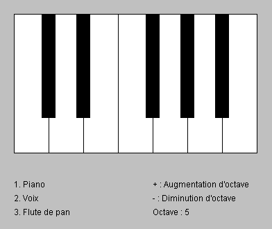

Accueil
Dans le cadre du suivi des cours de la spécialité ISN, nous avons choisi de développer un petit synthétiser de son en Java's cool. Notre équipe se constitue de trois élèves : Guillaume BARATA, Laurine LEFRANÇOIS et Alexandre GERAULT. Hormis Guillaume, nous avions déjà touché au monde du développement informatique en tant qu'amateur passioné.
En effet, l'apprentissage de Java's cool fut assez rapide pour nous dans la mesure où nous avions déjà utilisé le langage Java. Nous avons par ailleurs utilisé quelques classes de la bibliothèque Swing de Java afin de réaliser l'interface que la proglet ne nous permettait pas de réaliser.
On peut d'ailleurs voir ci-contre une illustration de l'interface de notre projet : simple et intuitive. Cependant, dû à un manque de temps, nous n'avons malheureusement pas pu implémenter un système permettant de jouer au clavier avec la souris. En effet, si le système permettant de récupérer les coordonnées de la souris au moment d'un clic est simple à utiliser, il nécessite un certain temps à implémenter et ne permet pas une aussi bonne prise en main que le clavier. C'est pour cela que nous avons privilégié l'implémentation du clavier.
Le projet
Genèse
Depuis quelques séances, nous avons pour tâche de réaliser un projet informatique. Ayant pour consigne d'utiliser Java's cool, nous avons décidé d'utiliser une proglet nous permettant de faire quelque chose qui nous aurait été compliqué de faire sans elle : la proglet nous permet une approche simplifiée de développement.
Nous avons alors commencé par réfléchir sur ce que nous avions envie de faire... Ce n'était pas l'étape la plus facile. On a finalement choisi de mettre en application un chapitre de Physique à propos des ondes sonores. En effet, grâce au spectre de Fourrier on peut décomposer un son complexe en somme de fonctions sinusoïdales. C'est à partir de ce principe et à la proglet Synthé que nous avons décidé de réaliser une sorte de synthetiser.
Généralité et avancement
Le projet Synthe-Son est donc développé en Java's cool. Il permet actuellement de choisir entre 3 instruments des notes à jouer, selon une durée fixée par le programme. Ces 3 instruments sont :
- Le piano
- La voix
- La flûte de Pan
Le programme réalisé permet également de changer d'octave et de l'affichée. De plus, les notes jouées sont affichées dans la sortie de la console. Cela permet à l'utilisateur de voir quelles notes il a joué.
Objectifs
L'objectif était de permettre à l'utilisateur de jouer des morceaux assez simple et surtout trouver des mélodies, avec des sons différents. Nous aurions bien voulue implémenter un système permettant à l'utilisateur de jouer lui-même sur les amplitudes des harmoniques afin qu'il puisse définir son propre son mais là encore, nous n'avons pas eu assez de temps.